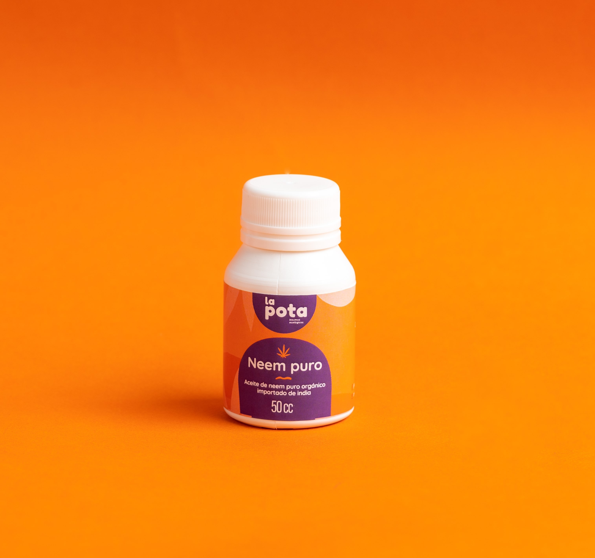
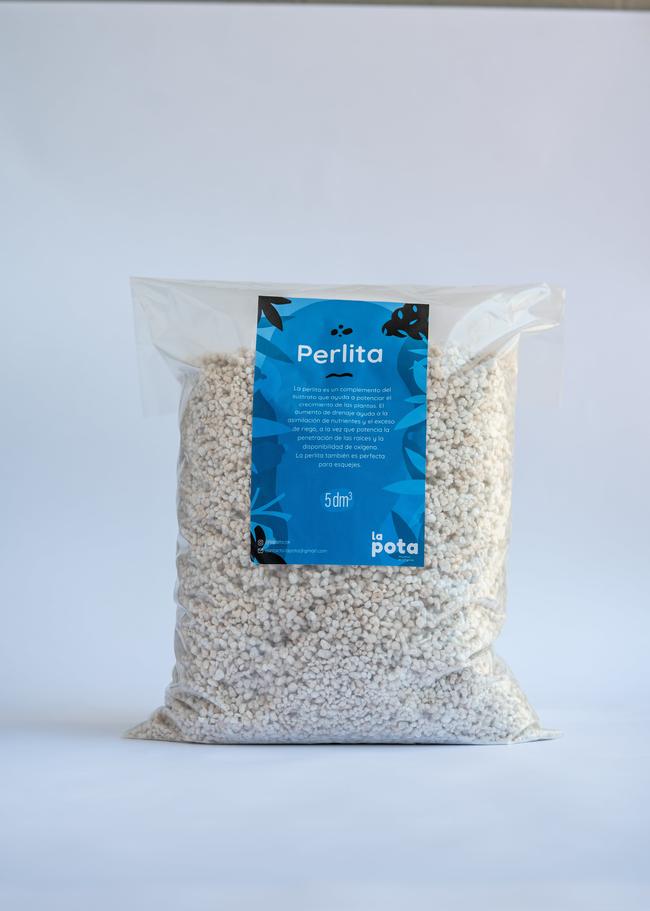
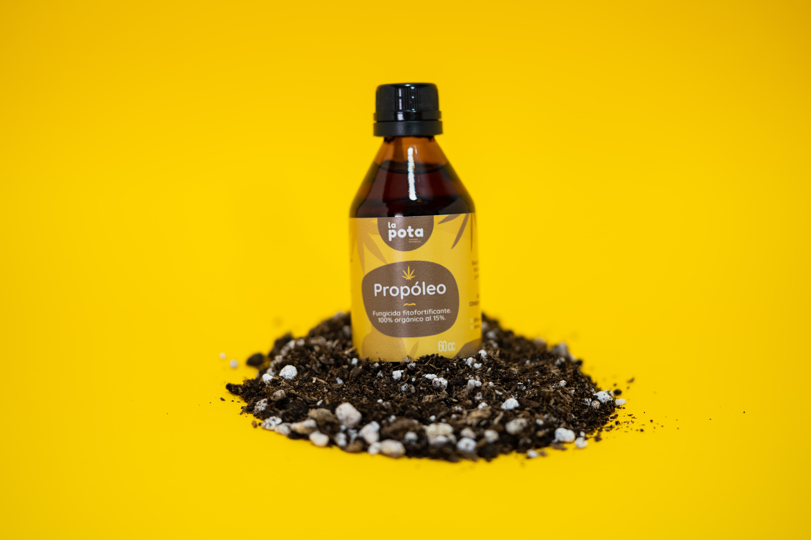
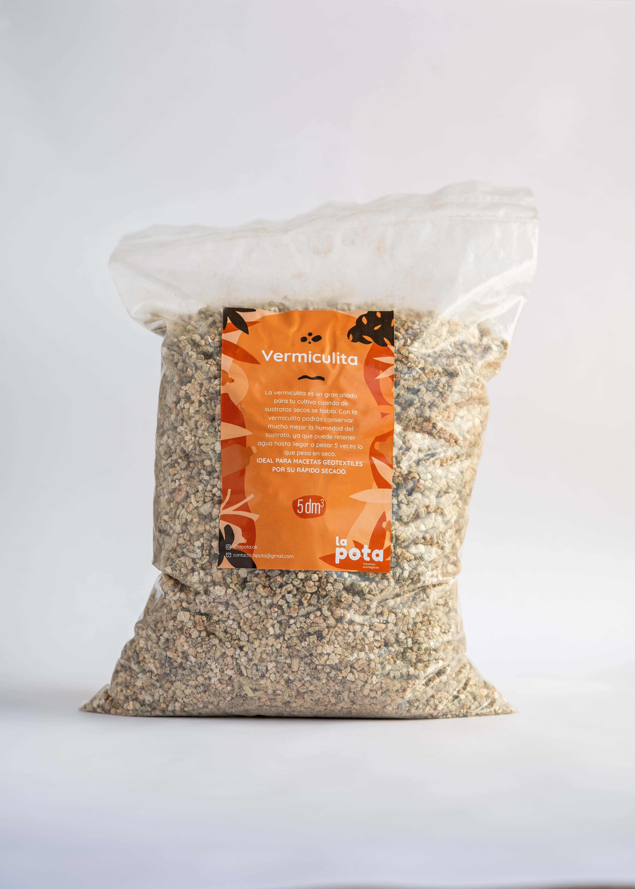

Te presentamos nuestros productos

Insecticida natural orgánico específico para araña roja y larvas.
Aceite de neem puro importado y extracto de canela.
Contenido: 50/100cc

Insecticida ecológico y
biodegradable concentrado, eficaz para la prevención de plagas originadas
por cochinillas, pulgones, araña roja, mosca blanca
y trips entre otros.
Contenido: 250ml

Insecticida fitofortificante
ecológico concentrado. Eficaz para el control de plagas originadas por cochinillas, pulgones,
araña roja, mosca blancas y trips entre otros.
Contenido 100/250ml

Más producción y mejor sabor en tus cosechas.
Enriquece el suelo, aumenta los microorganismos benéficiosos
Contenido: 250cc

Controla y previene plagas
como pulgón, minador, trips, larvas, cochinilla y mosca blanca.
Contenido: 50/100cc

La perlita es un complemento
del sustrato que ayuda a potenciar el crecimiento de las plantas.
El aumento de drenaje ayuda a la asimilación de nutrientes
y el exceso de riego, a la vez que potencia
la penetración de las raíces y la disponibilidad de oxígeno.
Contenido: 5/10dm3

Fungicida fitofortificante 100%
orgánico al 15%. La solución hidoalcohólica de propóleo actúa sobre los
microorganismos y estimula las defensas naturales de las plantas.
Contenido: 30/60cc

Insecticida orgánico preventivo.
Se puede utilizar en cualquier etapa del cultivo, al ser uninsecticida que actúa de forma mecánica los insectos
no generan resistencia.
Contenido: 150/500gr

La vermiculita es un gran aliado para tu cultivo cuando de sustratos secos se habla.
Con ella podrás conservar mucho mejor la humedad del sustrato, ya que puederetener
agua hasta llegar a pesar 5 veces lo que pesa en seco.
Contenido: 5dm3
Insecticida natural orgánico específico para araña roja y larvas. Aceite de neem puro importado y extracto de canela. Contenido: 50/100cc
Insecticida ecológico y biodegradable concentrado, eficaz para la prevención de plagas originadas por cochinillas, pulgones, araña roja, mosca blanca y trips entre otros. Contenido: 250ml
Insecticida fitofortificante ecológico concentrado. Eficaz para el control de plagas originadas por cochinillas, pulgones, araña roja, mosca blancas y trips entre otros. Contenido 100/250ml
Más producción y mejor sabor en tus cosechas. Enriquece el suelo, aumenta los microorganismos benéficiosos Contenido: 250cc
Controla y previene plagas como pulgón, minador, trips, larvas, cochinilla y mosca blanca. Contenido: 50/100cc
La perlita es un complemento del sustrato que ayuda a potenciar el crecimiento de las plantas. El aumento de drenaje ayuda a la asimilación de nutrientes y el exceso de riego, a la vez que potencia la penetración de las raíces y la disponibilidad de oxígeno. Contenido: 5/10dm3
Fungicida fitofortificante 100% orgánico al 15%. La solución hidoalcohólica de propóleo actúa sobre los microorganismos y estimula las defensas naturales de las plantas. Contenido: 30/60cc
Insecticida orgánico preventivo. Se puede utilizar en cualquier etapa del cultivo, al ser uninsecticida que actúa de forma mecánica los insectos no generan resistencia. Contenido: 150/500gr
La vermiculita es un gran aliado para tu cultivo cuando de sustratos secos se habla. Con ella podrás conservar mucho mejor la humedad del sustrato, ya que puederetener agua hasta llegar a pesar 5 veces lo que pesa en seco. Contenido: 5dm3